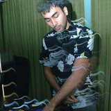
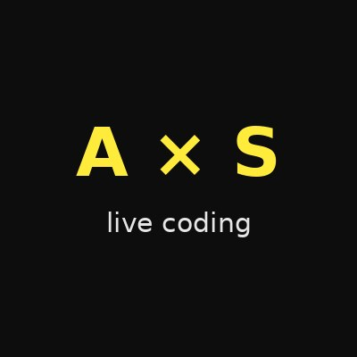
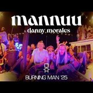
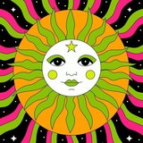

0X
0xMentalista trick every day
The only act in the garden whose instrument is your own head
Mentalism & close-up magic · web3 by day · a ten-minute trick every day of the week
Nov 3–6 · 10 min daily · 2:20p / 9:40a / 9:50a / 9:50a
Every artist who asked to play the Devcon 8 Music Space — Nov 3–6, Jio World Centre, Mumbai.
Not a stage. A circle on the floor.
21 artists with a set time in Shaka's blessed arrangement — and one magician with a ten-minute trick every day.
The only act in the garden whose instrument is your own head
Mentalism & close-up magic · web3 by day · a ten-minute trick every day of the week
Nov 3–6 · 10 min daily · 2:20p / 9:40a / 9:50a / 9:50a
Raas-Garba, Dayro, Lagan Geet — the first voice in the room comes from Gujarat
Gujarati folk voice · steward of the Music Space · 30 minutes of living tradition
Nov 3 · 11:50a · 30 min
Ten songs, ten languages, one country that refuses to be summarised
Hindustani classical since the age of five · a 30-minute journey across India · born in Mumbai
Nov 3 · 12:30p · 30 min
He released a raga about the Mumbai rains. Now he opens Devcon in Mumbai.
Indian classical on electric guitar · gayaki ang · jugalbandi with his tabla player Dhaivat
Nov 3 · 1:10p · 60 min

"Probably making music or eating bhel puri"
House music · ten years behind the decks · the hour the afternoon turns
Nov 3 · 4:00p–5:45p · 🤝 shared tag-team floor with itscharann, Ekant, huzzhouse & DJ Chalk
"26 | CA CFA | Your friendly neighborhood DJ"
House × commercial × Bollywood × hip-hop · open format · 45 minutes of reading the room
Nov 3 · 4:00p–5:45p · 🤝 shared tag-team floor with itscharann, Ekant, huzzhouse & DJ Chalk
"This was my first live DJ set and I did it in front of thousands of people!!"
House · EDM · Afro house × Indian house · 45 minutes of two continents agreeing
Nov 6 · 10:00a–12:00p · co-steward with Levi
Thirteen years of Bangalore nights, and he still books other people first
Deep house & nu-disco · venue curator · the last groove of day one
Nov 3 · 4:00p–5:45p · 🤝 shared tag-team floor with itscharann, Ekant, huzzhouse & DJ Chalk
Unstable sonic systems, material resonance, and water
Modular synths & amplified objects · electroacoustic improvisation · the first sound of Tuesday
Nov 4 · 9:50a · 30 min
High-energy guitar at twenty-five past ten in the morning, and the room will take it
Acoustic + electric guitar · advanced strumming · live versions that go somewhere
Nov 4 · 10:25a · 30 min
The room writes a song in one hour, and then finds out it owns it
Live collective songwriting · artist-owned co-op × direct-pay platform · bring your voice
Nov 4 · 12:40p · 60 min

Somebody types, and the room finds out what the typing sounds like
Live coding · music written in public, in front of you, while it plays
Nov 4 · 1:50p · 60 min
A gospel choir leader walks into a coffee lounge
Voice + guitar · gospel-trained · fifteen minutes that open the afternoon
Nov 4 · 2:55p · 15 min
Nostalgic music, futuristic production, and the gap between them on purpose
Melodic electronic originals · Hindi songwriting · his own songs, start to finish
Nov 4 · 4:00p · 30 min
He started DJing at Devcon. Two Devcons later he is on our floor.
House sundowners & techno afters · travels with his decks · grooves first
Nov 4 · 4:35p · 45 min
Go to an Indian wedding and you will hear Punjabi music. He is bringing the wedding.
Punjabi · Bollywood classics · contemporary Goan trance · Brooklyn weddings and crypto floors
Nov 4 · 5:25p · 45 min
"Lost in melodies, found in keys"
Pianist & keyboard artist, Pune · 14 years · will jam with anyone
Nov 5 · 10:00a · 30 min
"Music unites all" — three words, and he flew with them
Live voice over his own tracks · classic Hindi songbook in his heart · mid-morning Wednesday
Nov 5 · 10:40a · 30 min
Two words for what inspires her: emotions, and experience. Then ten songs explaining them.
Original Hindi songwriting · voice & guitar · a steward holding the room three days running
Nov 5 · 1:00p · 30 min
"Learning songs by ear, still." Twenty-five hackathons won, and the guitar is the side quest.
Pop songs on guitar · fifteen minutes · the quietest brave thing on the schedule
Nov 5 · 3:45p · 15 min
Mumbai to Philadelphia and back again, with zero-knowledge proofs in the set
Indian edits, melodic stretches, heavy drops · streamed through a music L2 · home
Nov 5 · 4:00p · 30 min

Two years running, he has played while the Man burned. One word for what inspires him: freedom.
blockravers / Lovepunks · DJ set + live music · the last long set of the week
Nov 5 · 4:40p · 60 min
Every day. No auditions, no gatekeepers, no wrong instrument.
"The orchestra is whoever shows up."
Music as sanctuary · every voice is a node · no auditions, no gatekeepers, no wrong instrument
every day · Nov 3–6 · the open jam, the long table, the coffee lounge, the songwriters' circle, the long goodbye
No fixed set time — the open jam runs every day and the decks are open. #NOONEISEVEROUT
He told us exactly what he's here for: to lose the fear
Bollywood × classical vocalist · ghazal in training · fifteen minutes, if he wants them
OSO Open / the garden

Dub, techno, psytrance, breakbeat, jungle — and the spaces in between
Genre-fluid sets shaped by the room · IN05 Network · an open invitation, not a maybe
OSO Open / the garden · Nov 4 if a window opens
"Clear fog and my brain feels too much light if i sing"
Live vocals + guitar · popular songs, expressive delivery, a very fun room
OSO Open / the garden
Rap music. Fifteen minutes. Ten songs already out, in two languages.
Rap / alt hip-hop · English and Hindi · a mic and his own backing
OSO Open / the garden
Fifteen years of guitar, and he came looking for a singer
Acoustic & electric · alternative, punk, metal · explicitly here to collaborate
OSO Open / the garden
"Disco house producer & DJ" — four words, three EPs, ten years
Classic French & UK house, disco edits · nu-disco originals · "it will be very funky"
OSO Open / the garden
Three songs, all his, and one word for where they came from
Rap · original material only · fifteen minutes
OSO Open / the garden
"To share myself with other people" — the shortest true answer anyone gave us
Bollywood voice · thirty minutes · volunteering for the Music Space too
OSO Open / the garden
A musician and a DJ from Bangalore, in that order
Melodic techno · live music too · blending whatever he's been listening to
OSO Open / the garden
"Music | Blockchains. Cooking | Baking."
Guitar & voice · jazzy singer-songwriter · improvisation is the whole point
OSO Open / the garden ⚠ see note
They can't be with us in Mumbai. Their seats don't expire.
Deep bass, a human voice on top of it, and something to look at
4NI4 is Ania Shestakova's live project · bass, vocals and visuals as one object
in the garden this year, on the floor next time

"Diffusion. Autoethnographic synth opera."
Media artist & sound producer · *Diffused Opera* · granular synthesis and generative texture
in the garden this year, on the floor next time
"Awarded singer, songwriter, pianist & DJ" — and she keeps every one of those separate, in public
Berlin · the album *Peace Of Mind* · Holy Water Sessions & Freedom Festival
in the garden this year, on the floor next time
"Music doesn't have to be anything more than something that makes you happy"
Bollywood hits · a sing-along, on purpose · the most honest application in the pile
in the garden this year, on the floor next time